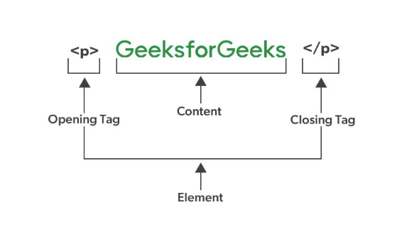
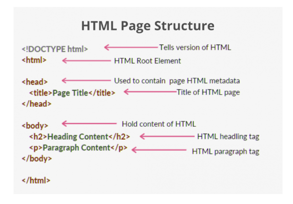
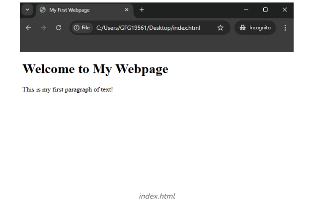
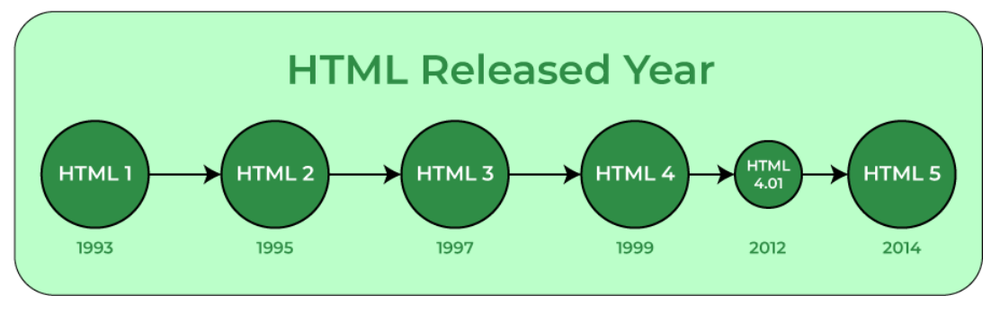

HTML stands for HyperText Markup Language. It is the standard language used to create and structure content on the web.
1.Build Websites: HTML is the basic building block for creating any website. Learning HTML can help you pursue a career in web development.
2.Customize Content: Allows you to edit or tweak web pages, emails, or templates to fit your needs.
3.Understand how the web works: Helps you grasp how the internet works and how web pages are structured.
4.Employment Opportunities: According to Bureau of Labor Statistics projects that employment for web developers will grow 16% between 2022-2032, which is much faster than the average across all occupations.
5.Learn Easily: HTML is beginner-friendly, making it a great first step into the world of coding and technology
HTML Element and HTML Tags are related but distinct. An HTML element is the complete structure, including the opening tag, content (if any), and the closing tag (if applicable).
On the other hand, A Tag is the actual keyword or name enclosed in angle brackets (<>) that tells the browser what kind of content to expect.
The basic structure of an HTML page is shown below. It contains the essential building-block elements (i.e. doctype declaration, HTML, head, title, and body elements) upon which all web pages are created.
An HTML document can be created using an HTML text editor . Save the text file using the “.html” or “.htm” extension. Once saved as an HTML document, the file can be opened as a webpage in the browser.
| Note:Basic/built-in text editors are Notepad (Windows) and TextEdit (MacOS). Other advanced text editors include Sublime Text, Visual Studio Code, Froala, etc. |
Unlike other programming languages, HTML does not show output on the compiler.Web browsers the results of an HTML code.
It reads HTML files and determines how to show content with the help of HTML tags. Any web browser (Google, Safari, Mozilla Firefox, etc) can be used to open a . HTML file and view the results.
Currently, we are using HTML5, which is the latest and most advanced version of HTML.
HTML was initially created by Tim Berners-Lee in 1991 as a way to share and structure documents on the web.
The first-ever version was HTML 1.0, a basic and limited version. However, the first standardized version, HTML 2.0, was published in 1995, laying the foundation for web development as we know it today
